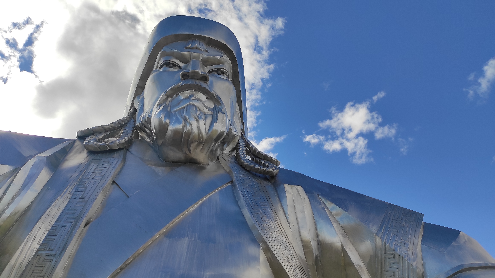

"I wanted to go everywhere. I would have started on a day's notice for the North Pole or the South, to the jungle or the desert. It made not the slightest difference to me."
-Roy Chapman Andrews, Under a lucky Star-

"I wanted to go everywhere. I would have started on a day's notice for the North Pole or the South, to the jungle or the desert. It made not the slightest difference to me."
-Roy Chapman Andrews, Under a lucky Star-Autumn '25 is the season I went back to Asia, 12 years after my last experience backpacking through Singapore, Malaysia, Thailand, Laos and Cambodia. To be fair Mongolia was not really on my bucket list but a friend of mine was really keen on visiting it and as he started to plan a road trip through the desert, I realised I couldn't really say no. So there we go again and after having spent the first few days in the capital city Ulanbataar, just in order to get rid of the jet lag and to find the most convenient tour option, we're off to the desert on a Monday morning till Saturday, me, my friend, a local driver and our tour guide which called himself Jack. The tour was a six days tour all included and it costed around 100$ per day. The amount of time we spent on the road was quite relevant, but since I love roadtripping, I definitely didn't mind spending so much time on our beloved UAZ-452. During the tour we have been through the following spots: Baga Gazrin Chuluu, Yolin Am, Khongor sand dunes, Flaming Cliffs (where the first dinosaur egg were found) and Tsagaan Suvarga. At the end of it, we spent a few more days in the capital city to recharge the batteries and on the following Monday, we were off to China on the Transmongolian train that took us all the way to Beijing. My mongolian experience was therefore quite minimal, altough there are some things I remarked while in the country and here I want to talk about it. Mongolia is a country that has been through certain phases and nowadays looks to me like a country that is halfway between the east and the west. There are four alpabets (four!) that you can see in the city being used and they are roman, cyrillic, traditional mongolian and chinese. Also due to the huge amount of japanese cars, you can see cars with the steering wheel on both sides and although most of them are hybrid electric, the pollution in the country is quite high due to the strong use of coal for heating and cooking, especially in the capital city. So where Mongolia stays nowadays is hard to say. For me it definitely stays amongst the countries where people are nice and welcoming, the nature is impressive in his brutality and the strong emphasis on cultural and folkloristic traditions gives the country a certain charm that unfortunately other countries in the world have lost. While on the desert tour, there is one album that I kept listening and it talks about an Italian band that in the '90s made the same trip as I did. The band is called CSI (Consorzio Suonatori Indipendenti) and the album called Tabula Rasa Elettrificata reflects everything they saw and felt during that experience in the former soviet state.

The Khalkhas are the largest ethnic group in Mongolia and they primarily inhabit the central and western regions of the country where they engage in nomadic herding and maintain a close connection to the land. The Khalkha ruling class was somehow formed by Genghis Khan and to the numerous descendents he had and they represent roughly the 80% of the actual mongolian population. They are divided in subethnic groups: thirteen northern and five southern Khalkha.
The Silk road was probably the beginning of the globalisation as we know it today. It is formed by a network of routes that is 500 years old (XV mid-century) and that connects basically the whole Eurasia, starting from China and going all the way to southern Europe and north Africa. The route was funded by the Han dynasty around the 110BC and it has such a big importance for the Chinese to the point that the great Wall of China was extended to ensure the protection of the trade. Silk, tea and porcelain were some of the goods mostly exported. The name in fact comes from the huge textile business originally produced in China and then exported to the west of the world. The road was not only important for the exchange of goods, but also for the exchange of religious and philosophical practices, such as Buddhism. Unlike the Silk road, the Tea road when built in the XIX century by the Russian Tsar, served a different route that started always in China on its way to the west, but this time crossing mostly only Russia, going through lake Baikal, Yekaterinburg and Kazan all the way until Moscow. As the name says, the road was obviously built to export tea since Russia was the biggest importer of Chinese tea (65% of the total export) which was often carried by camels (an animal that is native from North America and emigrated to Russia 3-5 million years ago through the Bering bridge).
There is an Italian man in the history of Asia that is still mentioned nowadays from tour guides in Mongolia and at the same time he is still unknown to the majority of Italians and his name is Giovanni da Pian del Carpine. Giovanni was born in Perugia around the beginning of the XII century and served as a friar for most of his life. He was sent on a mission to Mongolia by pope Gregory IX in 1245 in order to mitigate the cruel Mongolian invasions, that came all the way from their home country till the point of reaching the Italian peninsula in modern Friuli Venezia Giulia. Giovanni succeeded in his task and he was able to deliver the letter he was carrying with him to the gran Khan which denied the request of stopping the invasion. In his journey, he wrote the Historia Mongalorum, a book that describes his experience and the people he met that became famous and can be put somehow into the travel writing category, together with the more famous "Il Milione" of Marco Polo.
My last day in Ulan Bataar I spent it in the Zanabazar Museum of Fine Arts where I looked at some of the local artworks, especially regarding paintings, masks, costumes and statues. I noticed there was a big emphasis on the Buddhist side of Mongolia and to the hierarchy of mythological and divine figures that are part of it. My attention was caught by the Sita Tara also called white Tara that together with the green Tara is one of the most important deities of Vajrayana and Mahayana Buddhism. Her presence in the museum was quite important in terms of number of artefacts and after doing some researches, I found out that the so called Taras are figures that can save individuals from the eternal cyclical Samsara and from spiritual danger. Both figures are considered Bodhisattva from Mahayana, which means someone who is dedicated to help other individuals more than focusing on his own personal salvation. The Sita Tara is specifically known for her compassion, long life, healing and serenity.
The museum of Fine Arts I mentioned above was named after Zanazabar, one of the most prominent artist Mongolia ever had. Zanazabar was the first Bogd Gegeen (highest supreme leader of the Gelug Tibetan school), role that he received at the age of 4. He was born in 1635 and was an extremely talented and multitasking individual with a strong artistic vision, being able to work with sculptures, painting, architecture and able to write poetry. All those skills helped him to be identified with the beginning of a new humanistic Mongolian era that started in the XVII century. His most famous works are sculptures related to Buddhism, White Tara and Varajradhara. Zanazabar founded his religion center in 1647 in a place called Shankh Monastery that supposedly still exists and can be visited nowadays. When the tension raised at the end of the XVII century, Zanazabar had to seek refugee to Inner Mongolia, under the protection of the Qing dynasty and after a period of exile, he was able to re-enter his native country in 1701. Zanazabar returned to Beijing to conduct Buddhist rites when apparently he was poisoned to death at the age of 88.

One Day in Mongolia is by far the most iconic national painting Mongolia produced. In the vastity of its detailed reality, it shows an ordinary day of mongolian life, from cattle farming to camel riding, from camping to shamanic rituals to showing local sexual intercourses. The picture was painted from Balduugiin Sharav in a style called Zurag, which consists of mineral paint on cotton medium, bright colours and extremely fine brushworks. The work reminds me of another one of my favourite paintings, that I mention in the Madrid's page. The picture is The Garden of Earthly Delights by Hieronymus Bosch.

July 13 1923 was a day that humanity had to circle on its calendar because it was the day the first dinosaur egg was found. The discovery was mostly thanks to Roy Chapman Andrews, an american wanderer and naturalist who during his life escaped death multiple times and according to someone was the character who originally inspired Indiana Jones. Anderson was born in Wisconsin in 1884 and was a supporter of the "out of Asia" theory, a theory that states that human life started in Asia, in contradiction with the more classic "out of Africa" view. His ideas could have been the main reasons of his frequent travels to Asia and the finding of dinosaur eggs, something that happened almost like an incident and that was not originally planned. What was found in the desert of Gobi of Mongolia, in a site called Flaming Cliffs, is the egg of a group of herbivorous beaked dinosaurs called Theropoda. The expedictions continued for many years, before being cut around 1930 for political reasons.